Сайт клиники, где не страшно
Концепт сайта детской стоматологии в Ногинске. Задача простая: чтобы ребёнок захотел прийти, а родителю было понятно, куда нажимать.
- Что сделано
- Дизайн, вёрстка, анимация
- Из чего собран
- HTML, CSS и JavaScript, без фреймворков
- Экраны
- Телефон в первую очередь, затем планшет и компьютер
- Статус
- Концепт для портфолио

Задача и что мешает
Детская клиника продаёт не только лечение. Ребёнок боится бора, укола, белого халата и очереди, а родитель боится вести его в это место. Обычный сайт клиники этого не замечает: список услуг, фото кабинетов, форма.
Мне нужно было сделать сайт, на котором страх виден и снимается сразу. И при этом сохранить то, ради чего заходят: цену, адрес, телефон, кнопку «записаться».
Идея: сказочный журнал
Unboundedзаголовки и цифры
Playfair Display курсивакцент внутри фразы
Manropeтекст и интерфейс
Сайт читается как страницы детского журнала. У каждого блока своя композиция и своё движение при прокрутке, поэтому он не превращается в одинаковую ленту карточек.
Слоган «Без паники, мы феи» работает как правило для всего сайта. Страх не прячем, а показываем и вычёркиваем. Фея ведёт ребёнка от героя до подвала, у неё в каждом блоке своя роль: гид, мастер по осмотру, хранитель карты.
Цвета тёплые и плотные, акцент оранжевый. Фиолетовый использован редко, в паре мест. Надувные 3D-буквы и цифры дают игрушечный объём, а Playfair сглаживает его и добавляет «журнальной» интонации.
Десять блоков, десять сцен
Листайте вбок. Снимки сделаны с телефона 390 px шириной.
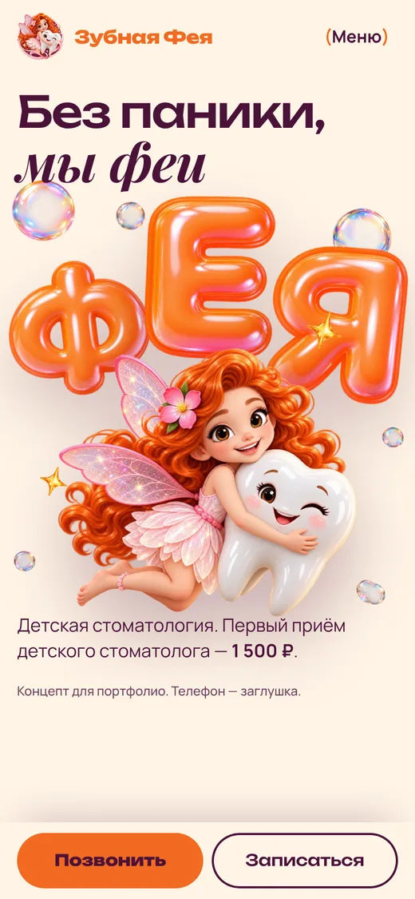
01Герой
«ФЕЯ» из надувных букв, фея обнимает подмигивающий зуб. Слоган сразу, звонок и запись внизу под большим пальцем.
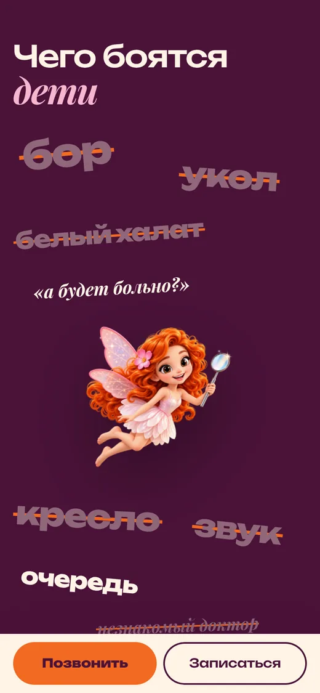
02Страхи
Слова страхов зачёркиваются прямо при прокрутке, а в конце остаются только феи.
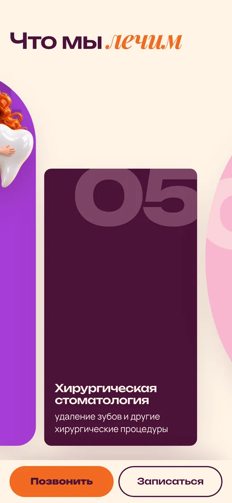
03Услуги
Восемь направлений горизонтальной лентой. У каждой карточки свой цвет и огромный номер.
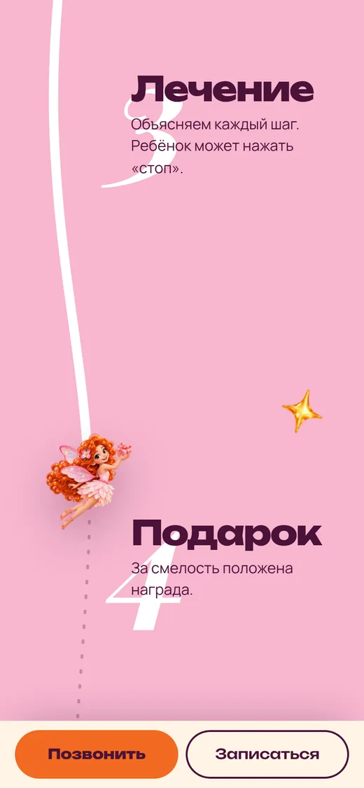
04Первый приём
Четыре шага: знакомство, осмотр, лечение, подарок. Фея летит по линии вниз и «проводит» ребёнка по ним.
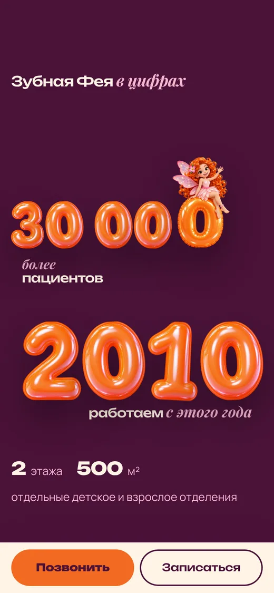
05Цифры
Опыт клиники показан не таблицей, а крупными надувными цифрами.
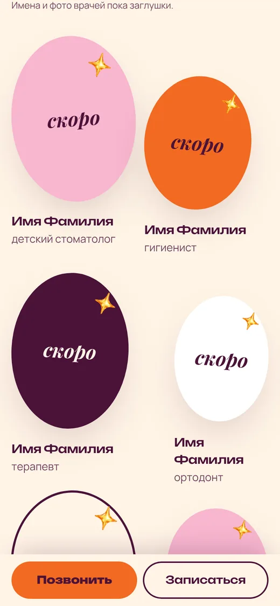
06Врачи
Пока без фото: овалы-заглушки в цветах сайта. Когда появятся портреты, они встанут на их место.
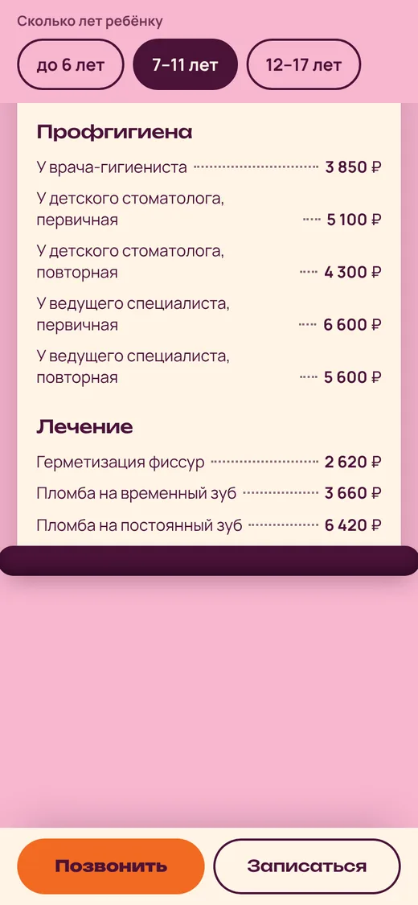
07Цены
Прайс в виде чека. Родитель выбирает возраст ребёнка, и цены пересчитываются под него.
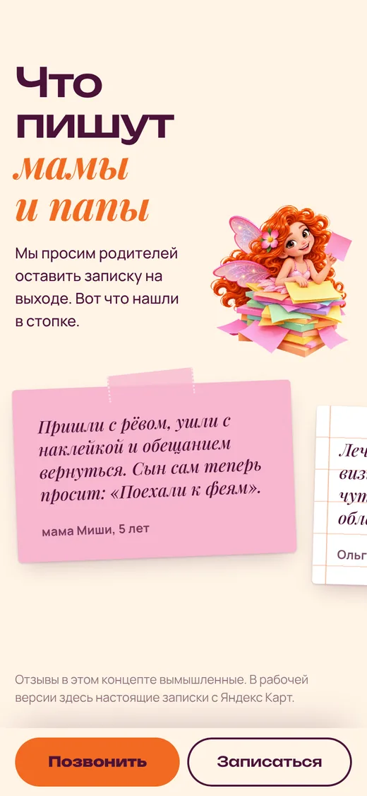
08Отзывы
Отзывы как записки-стикеры, которые приклеиваются. В концепте они вымышлены, и это написано под блоком.
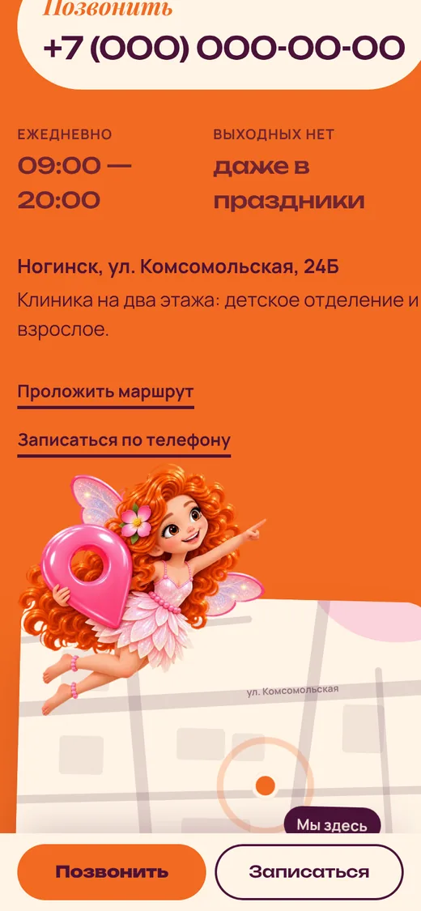
09Контакты
Оранжевый фон, схема проезда, фея с меткой. Телефон, адрес и маршрут видны без лишнего поиска.
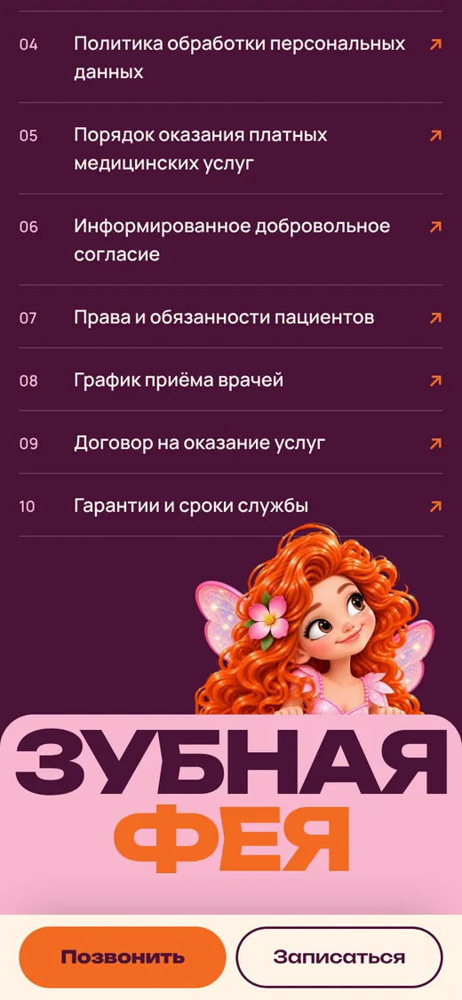
10Подвал
Гигантская надпись, из-за которой выглядывает фея, и колонка из десяти документов клиники.
Как это двигается
Запись экрана телефона: весь сайт сверху донизу. Видно, как вычёркиваются страхи, едет лента услуг, фея летит по линии первого приёма, печатается чек и приклеиваются записки.
Видео ускорено в полтора раза, чтобы ролик был короче. На самом сайте всё идёт в обычном темпе.
На компьютере то же самое
Те же сцены, но на широком экране буквы, лента и надписи занимают всю ширину.
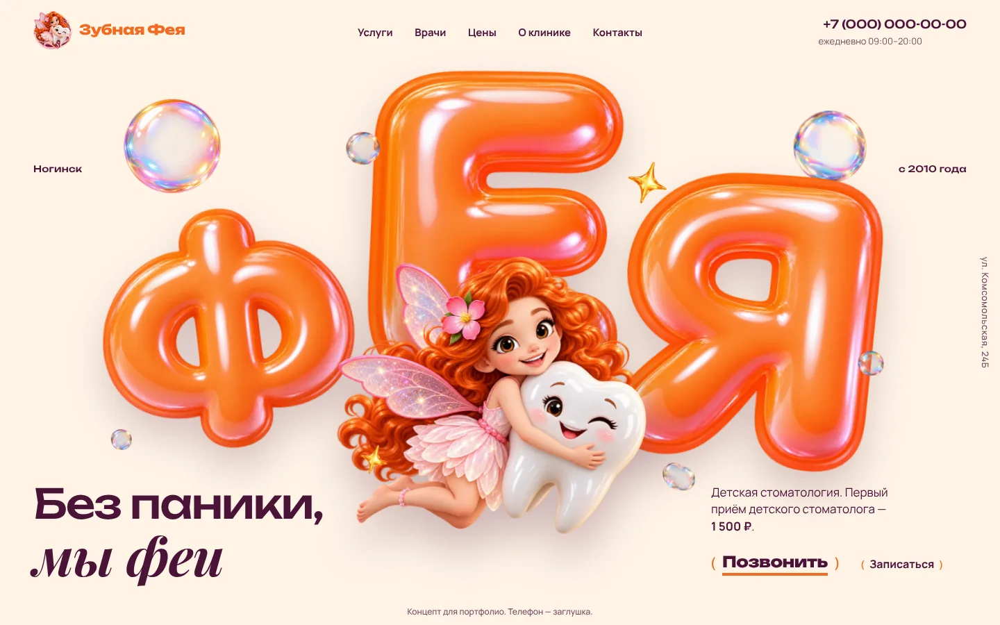
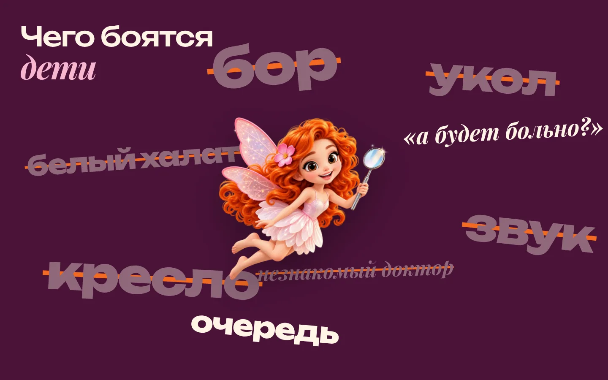
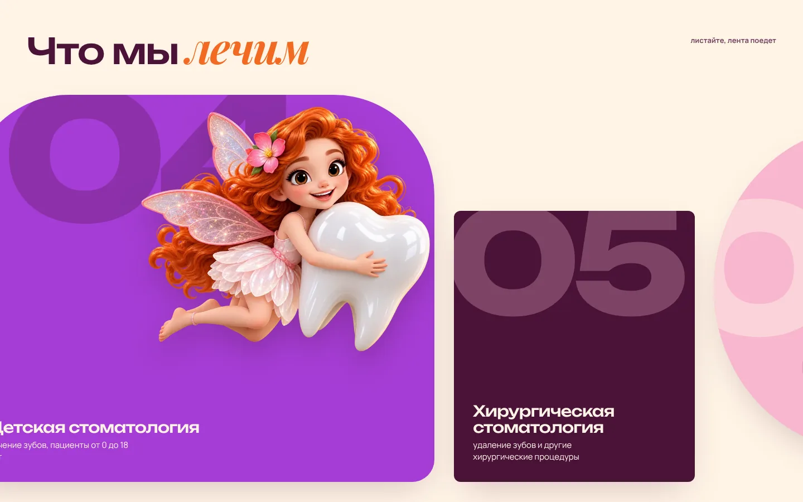
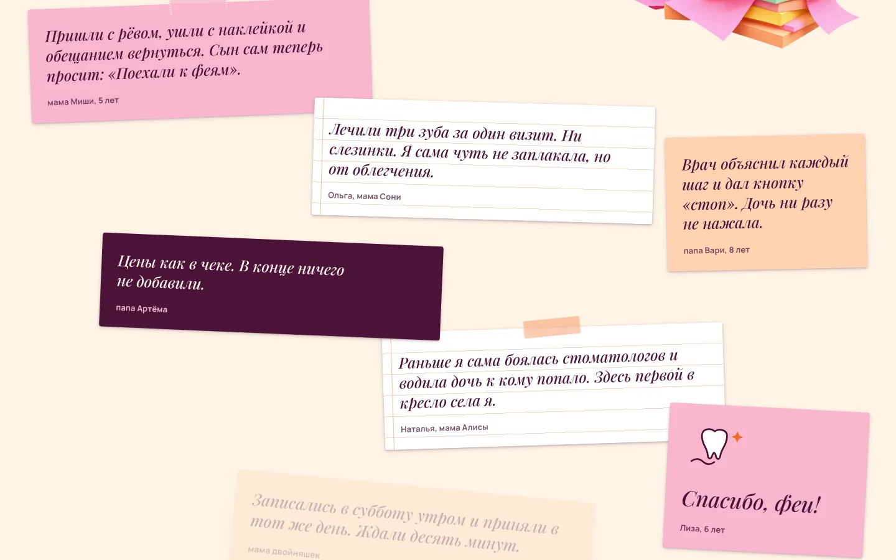
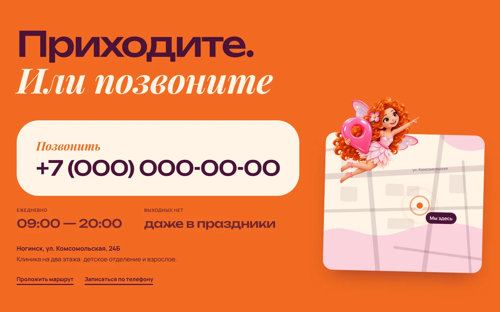
Под капотом, коротко
- Без фреймворков и без сервераОбычные файлы: HTML, CSS, JavaScript. Сайт открывается с любого хостинга, в том числе бесплатного.
- Лёгкий весВся папка около 3,7 МБ, самая тяжёлая картинка 260 КБ. Картинки в WebP с прозрачностью.
- Свои шрифтыТри шрифта лежат на сайте, а не грузятся с чужих серверов. Подмножество с кириллицей, около 170 КБ.
- Одна анимация-петляВсе движения идут через один общий цикл, без обработчиков прокрутки. Положение считается по вёрстке, поэтому ничего не раскачивается.
- Запасной вариантЕсли JavaScript выключен или в системе включено «уменьшить движение», сайт показывает все блоки спокойно и без анимаций.
- ПровереноВ Chromium на 360, 390, 768, 1440 и 1920 px, без горизонтальной прокрутки. Safari на iPhone и Mac проверяется отдельно, вручную.
Что дальше
Это концепт: телефон, имена врачей, отзывы и названия документов пока заглушки, а цены взяты с сайта клиники. Название и город клиники использованы для демонстрации.
Для настоящей клиники следующие шаги такие: реальные портреты врачей, номер телефона и документы, форма записи с отправкой заявок, собственный адрес сайта, карта на Яндекс Картах и подключённая статистика.
Открыть сайт